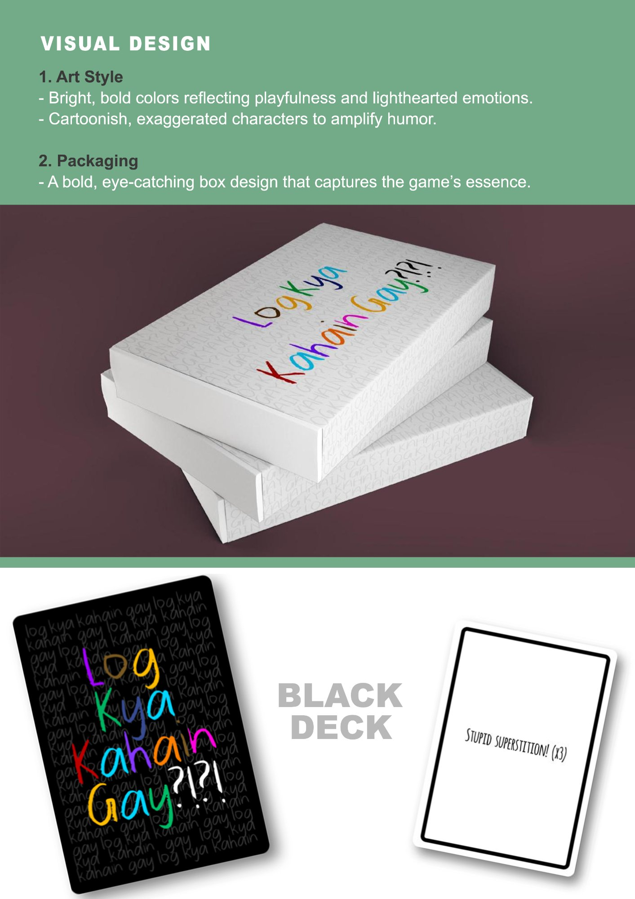
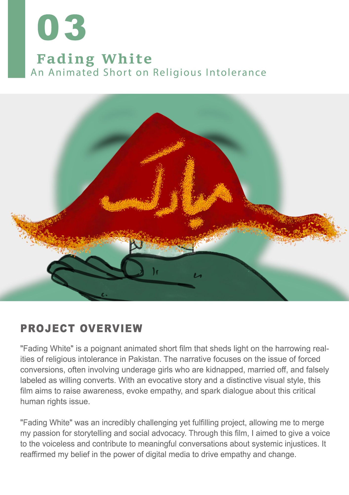
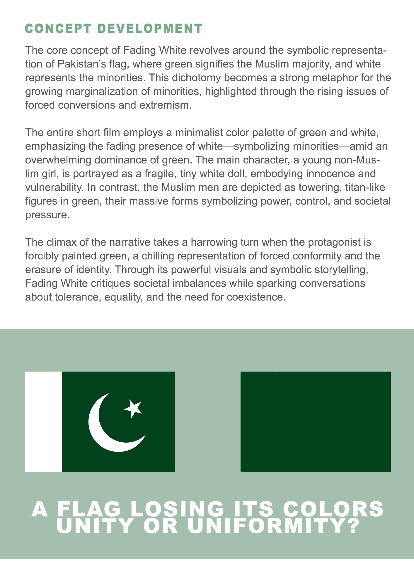

"Why is the white in our flag being replaced by our coldbloodedness?"
Fading White is a short animated film addressing forced religious conversions in Pakistan — a human rights crisis that disproportionately affects Hindu, Christian, and Sikh minorities, particularly young women and girls who are kidnapped, married off, and falsely registered as willing converts.
I wrote, directed, and produced the film entirely alone. I wanted to create something that could make someone feel the weight of the issue who might otherwise scroll past a news headline. The answer was abstraction and symbol — reducing the crisis to its most fundamental visual argument, and making that argument impossible to look away from.
The Concept
A flag as the whole argument.
Pakistan's flag divides into two colours: green for the Muslim majority, and white for all religious minorities. The entire film is an extension of that symbol. What does it mean when the white disappears? What does it look like when a country erases a part of itself — not through violence, but through the slow, smiling pressure of conformity?
Green — Dominance
The Muslim majority depicted as towering, faceless titan figures. Massive, cheerful, surrounding. Power that doesn't need to announce itself.
White — Vulnerability
The protagonist: a small, fragile white doll. A bindi on her forehead. Walking to school. Innocence and minority identity made physically small.
The fade — Erasure
The climax: the doll is painted green. Not destroyed — repainted. A smiling face holds her up, a chadar falls, and the Urdu word مبارک (congratulations) appears. The most chilling kind of violence.

The core visual concept: Pakistan's flag and what it means when the white begins to disappear.
Narrative
Six shots. No dialogue. Everything.
The film has no spoken dialogue — only sound design, music, and a closing voiceover. The entire story is told through composition and the visual logic of the colour system. A girl walks to school. Green figures appear. She is surrounded, lifted, carried. A brush comes. She becomes green. The flag's white is replaced. End.
The final voiceover is a fragment of Quaid-e-Azam's 1947 speech to the Constituent Assembly — Pakistan's founding promise of religious freedom for all citizens — placed against the image of the newly green doll. The juxtaposition is the film's point.

Narrative breakdown and production storyboard panels — the visual arc from opening to the chadar falling.
Production
Every frame has a reason.
The full shooting script documents every shot with scene direction, camera movement, music cues, and sound notes. The minimalist palette meant every design decision had to work much harder — there's nowhere to hide behind colour variety or surface detail. The scale contrast between the massive green figures and the tiny white doll had to be handled carefully to avoid making the film feel exploitative.

The shooting script: detailed storyboards with shot direction, music cues, camera movement notes, and sound design.
Reflection
What I learned.
Constraint creates clarity
Two colours. No dialogue. A short runtime. Every constraint forced me to be more precise about what the film was actually saying and whether each element was earning its place. This is my most distilled piece of work.
Design can be advocacy
I could have written an essay about forced conversions. I made an animation instead. The visual argument reaches somewhere that text doesn't — it makes you feel the scale disparity before you intellectualise it.
Representing harm responsibly
Working with a subject this serious required research into real testimonies and careful thought about representation. The film uses abstraction partly to protect the dignity of real people whose experiences it references.
What it confirmed
That I want to keep making work at the intersection of design, animation, and social commentary. The response this film gets — the conversations it starts — is exactly why I do this.
Next project
Log Kya Kahain Gay?!?! →
↗